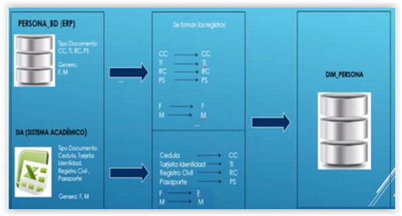

UD2 - Actividad 3 - Enunciado
Pulsa aquí para visualizar: UD2 - Actividad 3 - Enunciado
UF2215. UD2. Actividad 3. Ejercicio teórico-práctico: ETL
Enunciados (Descripción)
La Universidad requiere realizar un proceso a una tabla persona_bd (que forma parte del ERP, es decir, del sistema de planificación de recursos donde se integran todas las actividades del centro formativo) junto con la información contenida en un archivo de Excel (Sistema de Información Académica) para almacenarla en una DW (Data Warehouse o almacén de datos que es una colección de datos orientada al ámbito académico, integrado, no volátil y variable en el tiempo, que ayuda a la toma de decisiones) llamada dim_persona. Debido a que los valores del campo tarjeta de identidad del archivo de Excel no son iguales a los que están contenidos en el campo tipo de identificación de la tabla persona_bd nos surgen las siguientes cuestiones:

Preguntas / Actividades a realizar
Pregunta 1A. ¿Qué tipo de proceso se debe aplicar en este caso práctico planteado?
Pregunta 1B. Describe las distintas fases de este proceso para este caso.